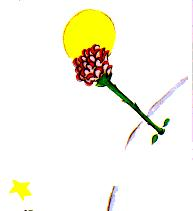

An cúigiú lá, a bhuíochas sin leis an chaora arís, léiríodh dom an
rún eile seo de chuid an phrionsa bhig agus an saol a bhí aige.
D'fhiafraigh sé díom go giorraisc gan rabhadh, mar a bheadh sé
tar éis bheith ag machnamh go tostach ar an fhadhb le fada:
- Má itheann caora toir, itheann sí bláthanna fosta?
- Itheann caora gach rud a dtagann sí suas leis.
- Fiú amháin bláthanna a bhfuil dealga acu?
- Is ea, fiú bláthanna a bhfuil dealga acu.
- Na dealga mar sin, cén mhaith atá leo?

Ní raibh a fhios agam. Bhí mé an-
ghnóthach ag an phointe sin agiarraidh
cnó ar an inneall a scaoileadh a bhí
rótheannta. Bhí mé an-bhuartha mar
bhí an chuma ar an scéal go raibh an
cliseadh seo i m'inneall an-dona, agus
an dóigh a raibh mo chuid uisce inólta
ag dul síos, d'fhág sé eagla mo chraicinn
orm.
- Na dealga, cén mhaith atá leo?
Níor ghnách leis an phrionsa beag
ceist a scaoileadh uaidh nuair a bhí sí
fiafraithe aige. Bhí míchéadfa orm de
bharr an chnó úd, agus dúirt mé
an chéad rud a tháinig isteach i
mo cheann:
- Níl maith ar bith le dealga, is
é drochrún na mbláthanna is cúis
leo!
-O!
Ach tar éis tosta bhig, chaith sé
liom,mara bheadh cineál doichill
air:
- Ní chreidim thú! Tá na
bláthanna leochaileach. Tá siad
saonta. Is cúis mhisnigh dóibh an
rud is lú. Síleann siad go bhfuil
siad scanraitheach lena gcuid
dealg...
Níor thug mé freagra air. Bhí
mé ag rá liom féin ag an bhomaite
sin: “Mura scaoilfidh an cnó seo,
brisfidh mé é le buille den chasúr. ”Chuir an prionsa beag isteach
ar mo mhachnamh arís:
- Agus an dóigh leatsa go bhfuil na bláthanna...?
- Ní hea! Ní hea! Ní dóigh liom rud ar bith! Dúirt mé an chéad
rud a tháinig i mo cheann. Tá rudaí tromchúiseacha ar m'intinn
agam!
D'amharc sé orm agus alltacht air.
- Rudaí tromchúiseacha!
Bhí mé ansin os a chomhair, mo chasúr i mo lámh, agus mo
mhéara dubh le hola,agus mé cromtha anuas ar rud a shíl sé a bhí
míofar amach agus amach.
Tá tú ag caint ar nós na ndaoine fásta!
Chuir sin beagán náire orm.Ach lean sé leis go míthrócaireach:
- Meascann tú gach rud...cuireann tú gach rud trína chéile!
Bhí sé an-chorraithe dáiríre. Bhí a chuid gruaige órbhuí ar
foluain le gaoth aige:
- Tá pláinéad ar eolas agam a bhfuil bodach ina chónaí air agus
aghaidh lasánta air. Níor bholaigh sé de bhláth riamh. Níor
bhreathnaigh sé ar réalta riamh. Ní raibh grá aige d'aon duine
riamh. Ní dhearna sé riamh ach suimeanna. Agus bíonn sé ag rá
ó mhaidin go hoíche cosúil leatsa: “Is duine tromchúiseach mé!
Is duine tromchúiseach mé!” agus é i mborr le mórchúis. Ach ní
duine atá ann, beacán is ea é.
- Cad é?
- Beacán.
Bhí an prionsa beag bán san aghaidh le fearg faoi seo
- Tá na bláthanna ag déanamh dealg leis na milliúin de
bhlianta. Ina dhiaidh sin, tá na caoirigh ag ithe na mbláthanna
leis na milliúin de bhlianta. Agus dar leat nach den tromchúis é
féacháil lena thuigbheáil cad chuige a gcuireann siad de stró
orthu féin dealga a dhéanamh nach bhfuil maith ar bith leo? Ní
rud tábhachtach é cogadh na gcaorach agus na mbláthanna? Ní
dóigh leat go bhfuil sé níos tábhachtaí agus níos tromchúisí ná na
suimeanna ag bodach na gnúise lasánta? Agus má tá bláithín ar
eolas agamsa nach bhfuil le fáil in aon áit eile sa chruinne ach ar
mo phláinéadsa amháin, agus más féidir le do chaora bheag é a
scrios maidin éigin d'aon ghreim amháin, gan a thuigbhéail cad
é atá déanta aici, an ea nach bhfuil sé sin tábhachtach?
Las sé san aghaidh, agus lean air:
- Má tá grá ag duine do bhláth nach bhfuil ach aon sampla
amháin de ann arfud na milliún agus na milliún de réaltaí, is leor
sin le haoibhneas a chur air agus é ag breathnú orthu. Deir sé leis
féin: “Tá mo bhláithín amuigh ansin áit éigin...” Ach má alpann
an chaora an bláth, is ionann sin aige agus dá múchfaí de phreab
na réaltaí go léir. Agus níl sé sin tábhachtach!
Ní raibh sé in ann a thuilleadh a rá. Agus thosaigh sé ag gol go
géar goirt. Bhí an oíche ann. Bhí mo chuid uirlisí fágtha uaim
agam. Bhí mé beag beann ar mo chasúr, ar mo chnó, ar an tart
agus ar an bhás. Bhí ar réalta áirithe, ar phláinéad, mo cheann
féin, an Talamh, bhí prionsa beag ann a raibh sólás de dhíth air.
Theann mé le m'ucht é. Thosaigh mé á luascadh. Deirinn leis:
“Níl baol ar bith ar an bhláithín a bhfuil grá agat dó...Líneoidh mé
mantóg agus cuirfimid ar an chaoraí...Líneoidh més ciath chosanta
don bhláth...Déanfaidh mé. Ní raibh a fhios agam cad é a
déarfainn. Mhothaigh mé an-tútach. Ní raibh a fhios agam cad é
mar a dhéanfainn teagmháil leis, cén áit a dtiocfainn suas leis. Is
tír an-diamhrach í tír na ndeor.